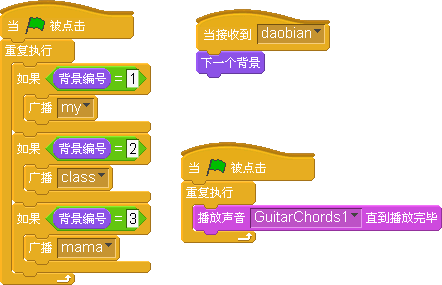
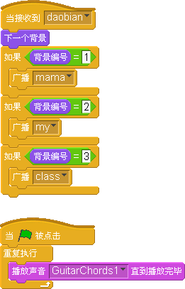
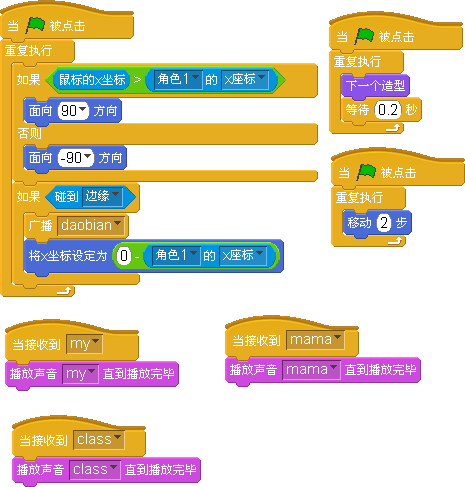

介绍我的家
#1 介绍我的家 作者：有志青年 发表时间：2013-2-20 20:48:46
在舞台与角色之间互传广播数据
第一个作品是不停走动的小猫，不定时的说同一个内容的语音。
第二个作品是介绍我的家，三个舞台之间切换，小猫根据鼠标在左还是右来决定如何穿过舞台。
【因附件大小问题，sb案例还是第一稿的内容，不判断鼠标，仅仅从屏幕左边向右边穿过】
技术点在于：
1、舞台和角色之间的通信（广播）
2、鼠标x坐标与角色（小猫）x坐标的判断角色走动的方向
3、用“0-角色的x坐标”来配合第2点让小猫从屏幕的另一端出现
过程问题：
在设计舞台切换的时候，脚本从下图1改为了二楼贴中的图。图1时，回传给角色的编号是乱的，但调试时显示的编号是对的。

图1
 02-介绍我的家.sb
02-介绍我的家.sb
［此帖子已被 有志青年 在 2013-2-21 20:52:57 编辑过］
#2 Re:介绍我的家 作者：有志青年 发表时间：2013-2-21 20:33:36
优化改进后，通过鼠标在小猫的左还是右，来决定是往哪个方向走

舞台脚本

角色脚本